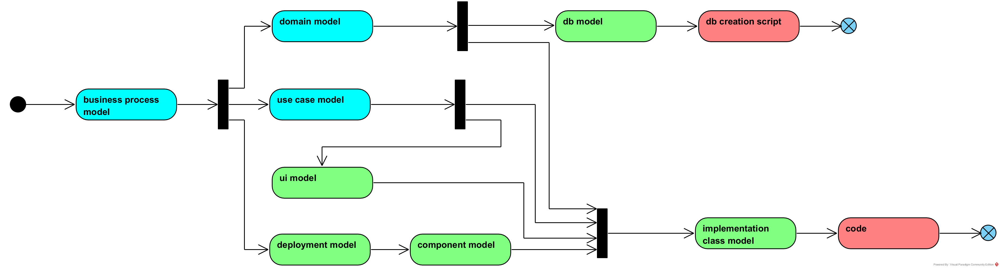

Type d'enseignement : ex-cathédra & démo & discussions.
Introduction
Le modèle de déploiement est la description physique du système,
il décrit les différents ordinateurs nécessaires à l'application
et les différents logiciels, exécutables, fichiers, ...
nécessaire au bon fonctionnement de l'application.
En UML, nous parlerons de noeuds et d'artefacts:
les noeuds (nodes) sont les composants physiques ou logiques qui exécuteront du code,
les noeuds physiques sont des ordinateurs, des smart-phones, des robots, des IOTs, ...
les noeuds logiques sont des machines virtuelles, par exemple un machine virtuelle VMWare, vsphere, virtual box
ou un conteneur docker
ou même la JVM (Java Virtual Machine), l'environnement d'exécution PHP ou python ou javascript, ...
les artefacts sont les composants logiciels produits
lors de l'implémentation de notre système,
ce sont des exécutables, des fichiers, des librairies, ...
Pour illustrer notre modèle de déploiment,
nous utiliserons principalement le diagramme UML de déploiement,
qui illustre les relations entre noeuds,
entre artefacts
et entre noeuds et artefacts.
Il est important de noter
que nous avons ici une utilisation simplifiée
des diagrammes de déploiement UML,
tout en respectant la norme.
Par contre, nous simplifions les définitions,
par exemple
Un Noeud est une cible de déploiement
qui représente une ressource de calcul
sur laquelle les Arefacts peuvent être déployés pour exécution.
et limitons nos diagrammes aux Node et Artifact,
alors qu'UML propose
Manifestation
Deployment Target
Device
Execution Environment
Communication Path
Deployment
deployment Specification
Contexte
Maintenant que nous avons une idée
du rôle du modèle de déploiement,
voyons comment il s'insère
dans le processus d'analyse:

en bleu l'analyse fonctionnelle
en vert l'analyse technique
en rouge l'implémentation
Le modèle de déploiement peut être débuté
très tôt dans le processus d'analyse,
pratiquement dès le départ,
car il est généralement fait sur base de contraintes techniques,
par exemple:
c'est une application web
les utilisateurs doivent pourvoir utiliser leurs smartphones
le système doit interconnecter à un système informatique extérieur
...
Il sera souvent réalisé après une première version du modèle des uses cases,
car ceux-ci nous permettent d'inventoriser tous les acteurs.
Exemple
Etudions le déploiement d'applications simples.
desktop binaire
Imaginons une application "desktop",
c'est à dire pour un ordinateur, Mac, Linux ou Windows,
de type "binaire",
c'est-à-dire compilée pour l'ordinateur cible et son OS (Operating System).
la Java Virtual Machine,
le logiciel qui éxécute le java byte code.
Le déploiement de l'application se fait donc en deux étapes:
déploiement de la JVM
(notons que beaucoup d'ordinateurs ont une JVM installée);
déploiement de word.jar.
Nous pourrions aussi être plus précis
et indiquer quelle version de la JVM,
par exemple version 11.
client / serveur
L'architecture client/serveur était très courante dans les années nonantes.
Facile à mettre en oeuvre,
facile à développer,
elle met en oeuvre
une application déployée sur les ordinateurs des utilisateurs
et une base de données centralisée.
Prenons l'exemple de l'application demande de congé
et imaginons que nous l'avons développée en java.
Le résultat de notre travail est donc un fichier jar,
soit holiday-app.jar.
Le déploiement de l'application consiste à copier le fichier
holiday-app.jar sur les ordinateurs des utilisateurs
et le schéma de la base de données sur le serveur DB, SQL Server par exemple:
Un serveur web statique est un serveur web
qui "publie" du contenu statique,
c'est-à-dire de l'HTML, du CSS, du javascript, des images, de l'audio, des polices de caractères ...
Ces contenus sont dits statiques
car ils préexistent à la requête.
Par opposition un serveur web dynamique
construit du contenu au moment de la requête.
Le diagramme illustre un serveur web
qui "publie" deux sites,
www.epfc.eu et moodle.epfc.eu.
Pour déployer ces applications,
il faut:
un ordinateur qui joue le rôle de serveur;
installer le logiciel apache
et le configurer pour accueillir les deux sites web;
installer les fichiers des deux sites sur le serveur,
il suffit simplement de copier coller les fichiers
dans un répertoire précis,
cela se fait souvent en utilisant le protocole SFTP (Secure File Transfer Protocole).
Bien sûr, il y a quelques étapes complémentaires à faire,
comme acheter le nom de domaine, installer un certicat SSL et probablement configurer un firewall.
web dynamique
Un serveur web dynamique
est un serveur web capable de générer du contenu
dynamiquement,
c'est-à-dire à l'instant où il reçoit la requête HTTP.
Un serveur web dynamique s'appuie sur un serveur de base de données
qui a la responsabilité du données
qui permettent de reconstituer les pages web.
Il y a beaucoup de solutions possibles,
et l'une des plus populaire est la combinaison Apache / PHP / mysql:
Le serveur web dynamique est à la base un serveur web statique
auquel nous avons ajouté un interpréteur PHP,
un composant logiciel capable d'exécuter du PHP.
Ici l'interpréteur PHP a été installé en tant que module d'Apache,
c'est pourquoi nous l'avons représenté dans le noeud Apache.
L'interpréteur PHP sert à exécuter le code PHP
stoké dans les fichiers des sites,
par exemple les fichiers dans le répertoire www/epfc.
one page
L'architecture "one page web application" est très courante aujourd'hui
car elle a quelques avantages
décharger le serveur du calcul de l'HTML
offrir un interface commune pour les applications web et mobile
l'internaute qui utilise son PC pour interagir avec l'application
PC le PC personnel de l'internaute, connecté à internet
browser, chrome, firefox, edge, ...
STATIC WEBSERVER est l'ordinateur jouant le rôle de serveur web statique
apache le logiciel servant de serveur web, ce pourrait être IIS ou Nginx ...
qui "publie" l'application html/css/javascript, dite FE (front end)
app-web-site-files le répertoire contenant tous les fichiers statiques de l'application FE
DYNAMIC WEBSERVER l'ordinateur jouant le rôle de serveur web qui offre du contenu dynamique,
ici sous forme de data
tomcat est le serveur web java le plus utilisé au monde
app-res-api.war est le Web ARchive contenant l'application java BE (backend) compilée
DB SERVER l'ordinateur est le serveur de base de données
ms sql server est le DB Engine de Microsoft, ce pourrait être Oracle, posgresql, mariadb, ...
app-schema est le schéma de la base de données utilisée par l'application app-res-api
mobile-person est une personne un mouvement
ANDROID est un ordinateur androïd
DVM est la Dalvik Virtual Machine (l'équivalent androïd de la JVM)
app.dex est l'application, au format dex (Dalvik EXecutable),
en général app.dex sera installé via le google play (le magasin d'applications androïd de google, non représenté ici).
Le PC et l'androïd communiquent de la même manière avec l'application app-rest-api.
Ici, ils utilisent un design REST, mais ce pourrait être du SOAP ou du graphQL
ou du sur mesure. L'important, c'est que l'interface est commune,
et qu'en conséquence, le code de app-rest-api est commun
(pas de IF browser ELSE IF android ...).
DDC
introduction
Dans cet section, nous illustrons le modèle de déploiement
par l'exemple de l'application "demande de congé" (ddc).
Nous réalisons différents modèles de déploiement
pour différentes architectures de l'application,
illustrant ainsi le fait
que le modèle de déploiement n'a pas une grande dépendance envers le modèle de use cases.
deskop
Notre client souhaite avoir une application type "desktop",
souvent appelé client lourd.
Dans cette architecture,
l'application est déployée sur tous les ordinateurs
de l'entreprise
et un serveur de database centralisé
est installé dans l'intranet de l'entreprise.
Le serveur de database est le point de partage des données de l'application.
Notre client souhaite aussi que l'application soit développée en Java,
car il a des ordinateurs de type PC/Windows et des macs.
Finalement, il impose la database mysql,
car son équipe IT a une très bonne connaissance de moteur de base de données.
Nous en déduisons le diagramme de déploiement suivant:
USER-COMPUTER le noeud où est exécuté l'application
(un PC/windows ou un mac)
ddc-app.jar l'exécutable java de notre application
(jar tient pour Java ARchive),
nous l'avons stéréotypé comme executable
pour mieux documenter le diagramme.
ddc-db est le répertoire où mysql enregistre les données
(en général, ce n'est pas documenté,
car nous ne nous préoccupons pas de ces répertoires,
excepté pour des aspects sécurités, contrôle d'accès)
acteurs
Dans ce diagramme de déploiement,
nous prenons un peu de liberté par rapport au standard UML
qui ne permet pas de mettre des acteurs
sur les diagrammes de déploiement.
Nous prenons cette liberté
car cela rend les diagrammes plus lisibles.
client - serveur
Cette fois-ci,
notre client nous impose une architecture client serveur
où l'application doit être décomposée en deux parties:
le client responsable de la présentation,
c'est-à-dire de l'interface utilisateur
le serveur responsable de la logique de l'application,
souvent appelée couche business
et la persistance des données (les échanges avec la database)
Il nous indique aussi que le manager
doit aussi pouvoir recevoir les demandes de congés par SMS
et qu'il doit pouvoir les approuver par SMS
(ceci est peu probable, mais cela nous fournit un bon exemple pédagogique et relativement simple).
Nous proposons le diagramme de déploiement suivant:
user-computer le PC/Windows ou mac des utilisateurs
application-server le serveur sur lequel est exécuté la logique de l'application
db-server le serveur de database
sms-gateway-server un serveur connecté au réseau téléphonique
et capable d'envoyer des SMS
java.exe est la machine virtuelle java
mysql.jar est le pilote Java de la base de données mysql
msqld.exe est le moteur de la base données mysql
ddc-db est le repertoire contenant les données de l'application
ddc-client.jar est l'application java
qui implémente l'interface utilisateur
dd-server.jar est l'application java
qui implémente la logique de l'application
et l'accès la base de données
ddc-sms.exe est l'application
qui implémente l'envoie et la reception
des SMS pour la demande de congé.
Notons que ddc-client.jar et ddc-sms.exe
utilisent la même interface pour communiquer
avec ddc-server.jar.
Ceci n'est possible
que si l'application a bien été découpée
et que toute la logique de l'application se trouve bien dans ddc-server.jar.
Nous apprendrons comment faire cela grâce aux use cases.
web
Notre client veut une application web.
Nous sommes spécialisés dans les technologies java, tomcat et mysql,
que nous proposons:

{kind=link}
{kind=link}
{kind=link}
{kind=link}
{kind=link}
{kind=link}
{kind=link}

{kind=link}
{kind=link}
{kind=link}
{kind=link}
{kind=link}